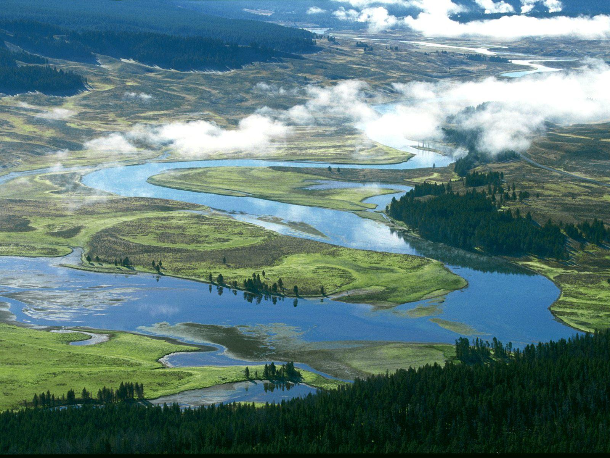

Климат - резко континентальный с большими сезонными и суточными перепадами температур. Лето — жаркое и умеренно сухое, тогда как зима является холодной и снежной, в предгорьях умеренно холодной. Средняя температура января от —17°С на равнинах до —26°С в замкнутых высокогорных котловинах: средняя температура июля от 19,6 °С на С.-З. до 23°С на Ю.-В. Среднее годовое количество осадков на С.-В. 350—380 мм, на Ю.-В. убывает до 250—300 мм; в Зайсанской котловине оно снижается до 129 мм, а на западных склонах Рудного Алтая увеличивается до 1000—1500 мм.

Рельеф - большую территорию Восточного Казахстана занимают Алтайские и Саур-Тарбагатайские горы с вечными ледниками на вершинах, Калбинский горный хребет, мелкохолмистые равнины, Казахский мелкосопочник, широкие котловины, обширные равнины вдоль рек. Наибольшие высоты находятся на С.-В. в Катунском хребте (с главной вершиной горы Белухой, 4506 м). Хребты Рудного Алтая — Убинский, Ивановский, Ульбинский — превышают 2000 м; хребты Южного Алтая — Курчумский, Сарымсакты, Нарымский, Южный Алтай и другие, некоторые из них — выше 3000 м.

Гидрография - более 40% всех водных запасов Казахстана сосредоточены в Восточно-Казахстанской области. На территории ВКО протекают около 885 рек длиной более 10 км. Главная река — Иртыш; наиболее крупные его притоки: Курчум, Нарым, Бухтарма, Ульба, Уба. Реки, бурные и порожистые, важные источники гидроэнергии, используются для сплава леса с гор. Питание рек снеговое и ледниково-снеговое. Паводки весной и летом. Крупное озеро Маркаколь. Озеро Зайсан в связи со строительством ГЭС на Иртыше превращено в крупное водохранилище.